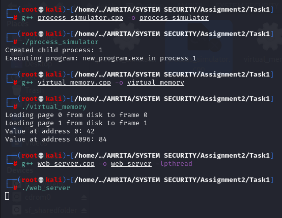
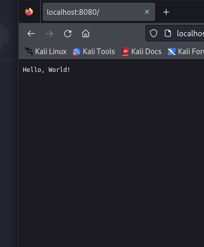
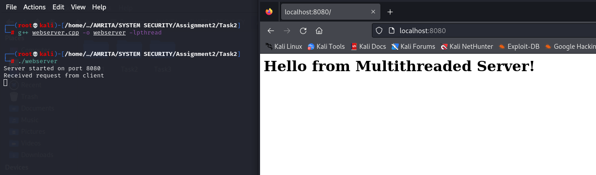
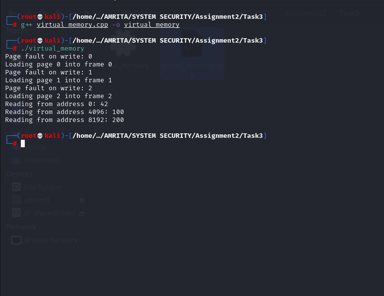

In this task, I've implemented a process management simulator that mimics the behavior of operating system processes. The simulator supports key system calls such as fork and exec, allowing for the creation of child processes, duplication of the parent process's address space, and the ability for the child to replace its memory image with a new program using exec. The simulator also manages process states (ready, running, blocked), handles process termination, and maintains process hierarchies.
fork system call. The child process inherits the address space of the parent process.exec system call replaces the current process's memory image with a new program.READY, RUNNING, or BLOCKED.process_simulator.cpp This file contains the implementation of the process management simulator. It defines the Process and ProcessManager classes, which handle process creation, execution, and termination.
#include <iostream>
#include <vector>
#include <unordered_map>
#include <memory>
#include <string>
enum class ProcessState { READY, RUNNING, BLOCKED };
class Process {
private:
int pid;
int ppid;
ProcessState state;
std::vector<uint8_t> addressSpace;
std::vector<std::shared_ptr<Process>> children;
public:
Process(int pid, int ppid = 0) :
pid(pid), ppid(ppid), state(ProcessState::READY) {
addressSpace.resize(1024, 0); // Simple 1KB address space
}
int getPid() const { return pid; }
int getPPid() const { return ppid; }
ProcessState getState() const { return state; }
void setState(ProcessState newState) { state = newState; }
std::shared_ptr<Process> fork() {
auto child = std::make_shared<Process>(getNextPid(), pid);
child->addressSpace = addressSpace; // Copy address space
children.push_back(child);
return child;
}
bool exec(const std::string& program) {
// Simulate loading new program
addressSpace.clear();
addressSpace.resize(1024, 0);
// Simulate program loading
std::cout << "Executing program: " << program << " in process " << pid << std::endl;
return true;
}
private:
static int getNextPid() {
static int nextPid = 1;
return nextPid++;
}
};
class ProcessManager {
private:
std::unordered_map<int, std::shared_ptr<Process>> processes;
std::shared_ptr<Process> currentProcess;
public:
ProcessManager() {
// Create init process
auto init = std::make_shared<Process>(0);
processes[0] = init;
currentProcess = init;
}
std::shared_ptr<Process> fork() {
if (!currentProcess) return nullptr;
auto child = currentProcess->fork();
processes[child->getPid()] = child;
return child;
}
bool exec(const std::string& program) {
if (!currentProcess) return false;
return currentProcess->exec(program);
}
bool terminateProcess(int pid) {
if (processes.find(pid) == processes.end()) return false;
processes.erase(pid);
return true;
}
void switchProcess(int pid) {
if (processes.find(pid) != processes.end()) {
if (currentProcess)
currentProcess->setState(ProcessState::READY);
currentProcess = processes[pid];
currentProcess->setState(ProcessState::RUNNING);
}
}
};
// Example usage
int main() {
ProcessManager pm;
// Create child process
auto child = pm.fork();
std::cout << "Created child process: " << child->getPid() << std::endl;
// Execute new program in child
pm.switchProcess(child->getPid());
pm.exec("new_program.exe");
// Terminate child
pm.terminateProcess(child->getPid());
return 0;
}
g++):g++ process_simulator.cpp -o process_simulator
./process_simulator
virtual_memory.cpp This file implements a simple virtual memory system with paging. It simulates a process with virtual memory addresses that are mapped to physical memory using a page table. The system handles page faults and implements the LRU (Least Recently Used) page replacement algorithm.
// Virtual Memory System with Paging
#include <iostream>
#include <vector>
#include <unordered_map>
#include <list>
#include <cstdint>
const size_t PAGE_SIZE = 4096;
const size_t NUM_PAGES = 256;
const size_t NUM_FRAMES = 128;
struct Page {
uint8_t data[PAGE_SIZE];
bool dirty = false;
bool present = false;
};
struct PageTableEntry {
uint32_t frame_number;
bool present;
bool dirty;
};
class VirtualMemory {
private:
std::vector<Page> physical_memory;
std::vector<PageTableEntry> page_table;
std::list<uint32_t> lru_list;
std::unordered_map<uint32_t, std::list<uint32_t>::iterator> page_to_lru;
size_t free_frames;
public:
VirtualMemory() :
physical_memory(NUM_FRAMES),
page_table(NUM_PAGES),
free_frames(NUM_FRAMES) {
for (auto& pte : page_table) {
pte.present = false;
pte.dirty = false;
}
}
uint8_t read(uint32_t virtual_address) {
uint32_t page_number = virtual_address / PAGE_SIZE;
uint32_t offset = virtual_address % PAGE_SIZE;
if (!page_table[page_number].present) {
handlePageFault(page_number);
}
// Update LRU
updateLRU(page_number);
uint32_t frame_number = page_table[page_number].frame_number;
return physical_memory[frame_number].data[offset];
}
void write(uint32_t virtual_address, uint8_t value) {
uint32_t page_number = virtual_address / PAGE_SIZE;
uint32_t offset = virtual_address % PAGE_SIZE;
if (!page_table[page_number].present) {
handlePageFault(page_number);
}
// Update LRU and mark page as dirty
updateLRU(page_number);
page_table[page_number].dirty = true;
uint32_t frame_number = page_table[page_number].frame_number;
physical_memory[frame_number].data[offset] = value;
physical_memory[frame_number].dirty = true;
}
private:
void handlePageFault(uint32_t page_number) {
uint32_t frame_number;
if (free_frames > 0) {
frame_number = NUM_FRAMES - free_frames;
free_frames--;
} else {
// Use LRU to select page to evict
uint32_t victim_page = lru_list.back();
frame_number = page_table[victim_page].frame_number;
// Write back if dirty
if (page_table[victim_page].dirty) {
writePageToDisk(victim_page, frame_number);
}
page_table[victim_page].present = false;
lru_list.pop_back();
page_to_lru.erase(victim_page);
}
// Load page from disk
loadPageFromDisk(page_number, frame_number);
page_table[page_number].frame_number = frame_number;
page_table[page_number].present = true;
page_table[page_number].dirty = false;
}
void updateLRU(uint32_t page_number) {
if (page_to_lru.find(page_number) != page_to_lru.end()) {
lru_list.erase(page_to_lru[page_number]);
}
lru_list.push_front(page_number);
page_to_lru[page_number] = lru_list.begin();
}
void writePageToDisk(uint32_t page_number, uint32_t frame_number) {
// Simulate writing to disk
std::cout << "Writing page " << page_number << " to disk" << std::endl;
}
void loadPageFromDisk(uint32_t page_number, uint32_t frame_number) {
// Simulate loading from disk
std::cout << "Loading page " << page_number << " from disk to frame "
<< frame_number << std::endl;
}
};
int main() {
VirtualMemory vm;
// Example usage
vm.write(0, 42);
vm.write(PAGE_SIZE, 84);
std::cout << "Value at address 0: " << (int)vm.read(0) << std::endl;
std::cout << "Value at address " << PAGE_SIZE << ": "
<< (int)vm.read(PAGE_SIZE) << std::endl;
return 0;
}
g++):g++ virtual_memory.cpp -o virtual_memory
./virtual_memory
web_server.cpp This file implements a multithreaded web server using POSIX threads (Pthreads). The server can handle multiple client requests concurrently, with each request being handled by a different thread. The implementation ensures proper thread synchronization, avoids race conditions, and supports graceful thread shutdown when the server exits.
// Multithreaded Web Server
#include <iostream>
#include <pthread.h>
#include <queue>
#include <string>
#include <unistd.h>
#include <sys/socket.h>
#include <netinet/in.h>
#include <atomic>
#include <signal.h>
const int MAX_THREADS = 10;
const int PORT = 8080;
struct ThreadPool {
std::queue<int> clientQueue;
pthread_t threads[MAX_THREADS];
pthread_mutex_t queueMutex;
pthread_cond_t queueCond;
std::atomic<bool> shutdownFlag{false};
ThreadPool() {
pthread_mutex_init(&queueMutex, NULL);
pthread_cond_init(&queueCond, NULL);
}
~ThreadPool() {
pthread_mutex_destroy(&queueMutex);
pthread_cond_destroy(&queueCond);
}
};
ThreadPool* pool;
void* handleClient(void* arg) {
char buffer[1024];
while (!pool->shutdownFlag) {
int clientSocket;
pthread_mutex_lock(&pool->queueMutex);
while (pool->clientQueue.empty() && !pool->shutdownFlag) {
pthread_cond_wait(&pool->queueCond, &pool->queueMutex);
}
if (pool->shutdownFlag) {
pthread_mutex_unlock(&pool->queueMutex);
break;
}
clientSocket = pool->clientQueue.front();
pool->clientQueue.pop();
pthread_mutex_unlock(&pool->queueMutex);
// Handle client request
read(clientSocket, buffer, sizeof(buffer));
// Simple HTTP response
std::string response = "HTTP/1.1 200 OK\r\nContent-Length: 13\r\n\r\nHello, World!";
write(clientSocket, response.c_str(), response.length());
close(clientSocket);
}
return NULL;
}
void signalHandler(int sig) {
if (pool) {
pool->shutdownFlag = true;
pthread_cond_broadcast(&pool->queueCond);
}
}
int main() {
int serverSocket = socket(AF_INET, SOCK_STREAM, 0);
struct sockaddr_in address;
address.sin_family = AF_INET;
address.sin_addr.s_addr = INADDR_ANY;
address.sin_port = htons(PORT);
bind(serverSocket, (struct sockaddr *)&address, sizeof(address));
listen(serverSocket, 5);
pool = new ThreadPool();
signal(SIGINT, signalHandler);
// Create thread pool
for (int i = 0; i < MAX_THREADS; i++) {
pthread_create(&pool->threads[i], NULL, handleClient, NULL);
}
while (!pool->shutdownFlag) {
int clientSocket = accept(serverSocket, NULL, NULL);
if (clientSocket < 0) continue;
pthread_mutex_lock(&pool->queueMutex);
pool->clientQueue.push(clientSocket);
pthread_cond_signal(&pool->queueCond);
pthread_mutex_unlock(&pool->queueMutex);
}
// Cleanup
for (int i = 0; i < MAX_THREADS; i++) {
pthread_join(pool->threads[i], NULL);
}
close(serverSocket);
delete pool;
return 0;
}
g++):g++ web_server.cpp -o web_server -lpthread
-lpthread flag is required to link the pthread library.)./web_server
http://localhost:8080 using a browser or a tool like curl.Ctrl+C. The server will handle the shutdown signal and terminate all threads properly.

Task 1 consists of three main components:
Each component is implemented in a separate file, and the instructions for compiling and running each program are provided above. These programs demonstrate key concepts in operating systems, including process management, memory management, and concurrent server design.
In Task 2, I've implemented a multithreaded web server using POSIX threads (Pthreads). The server is designed to handle multiple client requests concurrently, with each request being processed by a separate thread. The implementation ensures proper thread synchronization, avoids race conditions, and supports graceful thread shutdown when the server exits. Additionally, the server uses a thread pool for efficient resource management.
webserver.cpp This file contains the implementation of the multithreaded web server. It defines a ThreadPool class to manage the thread pool and handle client requests concurrently.
// webserver.cpp
#include <iostream>
#include <string>
#include <pthread.h>
#include <unistd.h>
#include <sys/socket.h>
#include <netinet/in.h>
#include <vector>
#include <queue>
#include <signal.h>
#include <cstring>
#define PORT 8080
#define THREAD_POOL_SIZE 10
#define MAX_CONNECTIONS 100
struct ThreadPool {
std::queue<int> tasks;
pthread_t* threads;
pthread_mutex_t mutex;
pthread_cond_t condition;
bool shutdown;
ThreadPool(size_t num_threads) : shutdown(false) {
pthread_mutex_init(&mutex, NULL);
pthread_cond_init(&condition, NULL);
threads = new pthread_t[num_threads];
}
~ThreadPool() {
delete[] threads;
pthread_mutex_destroy(&mutex);
pthread_cond_destroy(&condition);
}
};
ThreadPool* pool = nullptr;
void send_http_response(int client_socket) {
const char* response =
"HTTP/1.1 200 OK\r\n"
"Content-Type: text/html\r\n"
"Connection: close\r\n"
"\r\n"
"<html><body><h1>Hello from Multithreaded Server!</h1></body></html>";
write(client_socket, response, strlen(response));
}
void* handle_connection(void* arg) {
char buffer[1024];
while (true) {
int client_socket;
pthread_mutex_lock(&pool->mutex);
while (pool->tasks.empty() && !pool->shutdown) {
pthread_cond_wait(&pool->condition, &pool->mutex);
}
if (pool->shutdown && pool->tasks.empty()) {
pthread_mutex_unlock(&pool->mutex);
break;
}
client_socket = pool->tasks.front();
pool->tasks.pop();
pthread_mutex_unlock(&pool->mutex);
// Handle client request
ssize_t bytes_read = read(client_socket, buffer, sizeof(buffer) - 1);
if (bytes_read > 0) {
buffer[bytes_read] = '\0';
std::cout << "Received request from client\n";
send_http_response(client_socket);
}
close(client_socket);
}
return nullptr;
}
void signal_handler(int sig) {
if (pool) {
pthread_mutex_lock(&pool->mutex);
pool->shutdown = true;
pthread_cond_broadcast(&pool->condition);
pthread_mutex_unlock(&pool->mutex);
}
}
int main() {
int server_socket = socket(AF_INET, SOCK_STREAM, 0);
if (server_socket == -1) {
std::cerr << "Failed to create socket\n";
return 1;
}
// Set socket options
int opt = 1;
if (setsockopt(server_socket, SOL_SOCKET, SO_REUSEADDR, &opt, sizeof(opt))) {
std::cerr << "setsockopt failed\n";
return 1;
}
// Configure server address
struct sockaddr_in address;
address.sin_family = AF_INET;
address.sin_addr.s_addr = INADDR_ANY;
address.sin_port = htons(PORT);
// Bind socket
if (bind(server_socket, (struct sockaddr*)&address, sizeof(address)) < 0) {
std::cerr << "Bind failed\n";
return 1;
}
// Listen for connections
if (listen(server_socket, MAX_CONNECTIONS) < 0) {
std::cerr << "Listen failed\n";
return 1;
}
// Initialize thread pool
pool = new ThreadPool(THREAD_POOL_SIZE);
// Set up signal handler
signal(SIGINT, signal_handler);
// Create worker threads
for (int i = 0; i < THREAD_POOL_SIZE; i++) {
if (pthread_create(&pool->threads[i], NULL, handle_connection, NULL) != 0) {
std::cerr << "Failed to create thread\n";
return 1;
}
}
std::cout << "Server started on port " << PORT << std::endl;
// Accept connections
while (!pool->shutdown) {
int client_socket = accept(server_socket, NULL, NULL);
if (client_socket < 0) continue;
pthread_mutex_lock(&pool->mutex);
pool->tasks.push(client_socket);
pthread_cond_signal(&pool->condition);
pthread_mutex_unlock(&pool->mutex);
}
// Wait for threads to finish
for (int i = 0; i < THREAD_POOL_SIZE; i++) {
pthread_join(pool->threads[i], NULL);
}
close(server_socket);
delete pool;
return 0;
}
g++):g++ webserver.cpp -o webserver -lpthread
-lpthread flag is required to link the pthread library.)./webserver
http://localhost:8080 using a browser or a tool like curl.Ctrl+C. The server will handle the shutdown signal and terminate all threads properly.
Task 2 focuses on building a multithreaded web server that can handle multiple client requests concurrently. The server uses a thread pool to manage resources efficiently and ensures proper thread synchronization to avoid race conditions. The implementation also supports graceful shutdown, allowing the server to exit cleanly without leaving threads hanging.
The webserver.cpp file contains the complete implementation of the server, and the instructions for compiling and running the program are provided above. This task demonstrates key concepts in concurrent programming, including thread management, synchronization, and resource pooling.
In Task 3, I've implemented a simple virtual memory system with paging. The program simulates a process with virtual memory addresses that are mapped to physical memory using a page table. The system handles page faults and implements the LRU (Least Recently Used) page replacement algorithm to bring pages into memory when a page fault occurs. The system also keeps track of which pages are in memory and handles page swaps with minimal overhead.
virtual_memory.cpp This file contains the implementation of the virtual memory system. It defines a VirtualMemory class that handles virtual memory operations, including reading, writing, and page fault handling.
#include <iostream>
#include <unordered_map>
#include <list>
#include <vector>
#include <cstdint>
class VirtualMemory {
private:
static const int PAGE_SIZE = 4096;
static const int FRAME_COUNT = 128;
static const int PAGE_COUNT = 256;
struct Page {
int frame_number = -1;
bool present = false;
bool dirty = false;
std::vector<uint8_t> data;
Page() : data(PAGE_SIZE, 0) {}
};
std::vector<Page> pages;
std::vector<bool> frames;
std::list<int> lru_list;
std::unordered_map<int, std::list<int>::iterator> page_to_lru;
int allocateFrame() {
if (lru_list.size() < FRAME_COUNT) {
for (int i = 0; i < FRAME_COUNT; i++) {
if (!frames[i]) {
frames[i] = true;
return i;
}
}
}
int victim_page = lru_list.back();
lru_list.pop_back();
page_to_lru.erase(victim_page);
int frame = pages[victim_page].frame_number;
if (pages[victim_page].dirty) {
writePageToDisk(victim_page);
}
pages[victim_page].present = false;
pages[victim_page].frame_number = -1;
return frame;
}
void updateLRU(int page_number) {
if (page_to_lru.find(page_number) != page_to_lru.end()) {
lru_list.erase(page_to_lru[page_number]);
}
lru_list.push_front(page_number);
page_to_lru[page_number] = lru_list.begin();
}
void handlePageFault(int page_number) {
int frame = allocateFrame();
loadPageFromDisk(page_number, frame);
pages[page_number].frame_number = frame;
pages[page_number].present = true;
pages[page_number].dirty = false;
updateLRU(page_number);
}
void writePageToDisk(int page_number) {
std::cout << "Writing page " << page_number << " to disk" << std::endl;
}
void loadPageFromDisk(int page_number, int frame) {
std::cout << "Loading page " << page_number << " into frame " << frame << std::endl;
}
public:
VirtualMemory() : pages(PAGE_COUNT), frames(FRAME_COUNT, false) {}
uint8_t read(int virtual_address) {
int page_number = virtual_address / PAGE_SIZE;
int offset = virtual_address % PAGE_SIZE;
if (!pages[page_number].present) {
std::cout << "Page fault on read: " << page_number << std::endl;
handlePageFault(page_number);
}
updateLRU(page_number);
return pages[page_number].data[offset];
}
void write(int virtual_address, uint8_t value) {
int page_number = virtual_address / PAGE_SIZE;
int offset = virtual_address % PAGE_SIZE;
if (!pages[page_number].present) {
std::cout << "Page fault on write: " << page_number << std::endl;
handlePageFault(page_number);
}
pages[page_number].data[offset] = value;
pages[page_number].dirty = true;
updateLRU(page_number);
}
};
int main() {
VirtualMemory vm;
// Test virtual memory operations
vm.write(0, 42);
vm.write(4096, 100); // Write to second page
vm.write(8192, 200); // Write to third page
std::cout << "Reading from address 0: " << (int)vm.read(0) << std::endl;
std::cout << "Reading from address 4096: " << (int)vm.read(4096) << std::endl;
std::cout << "Reading from address 8192: " << (int)vm.read(8192) << std::endl;
return 0;
}
```cpp
#### How to Run: {#how-to-run-4 }
1. Compile the file using a C++ compiler (e.g., `g++`):
```bash
g++ virtual_memory.cpp -o virtual_memory
./virtual_memory

Task 3 focuses on implementing a virtual memory system with paging. The system simulates virtual memory addresses, handles page faults, and uses the LRU algorithm for page replacement. The program demonstrates key concepts in memory management, including:
The virtual_memory.cpp file contains the complete implementation of the virtual memory system, and the instructions for compiling and running the program are provided above. This task provides a hands-on understanding of how operating systems manage memory and handle page faults efficiently.